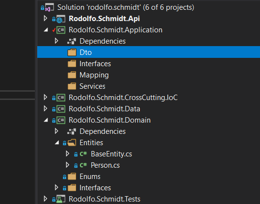
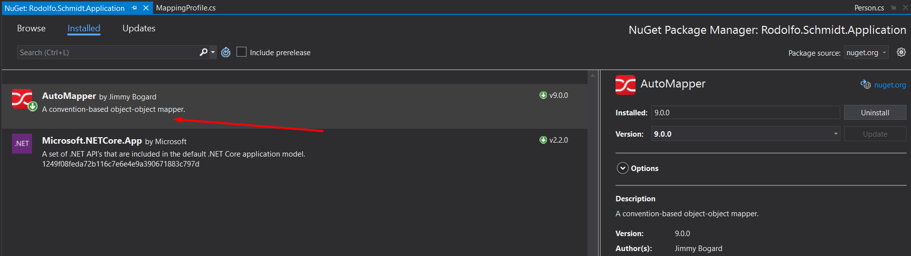
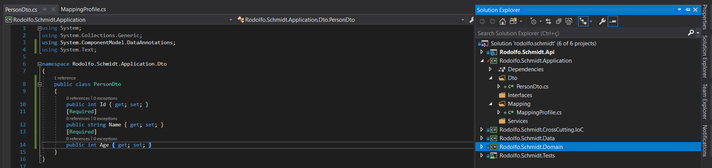
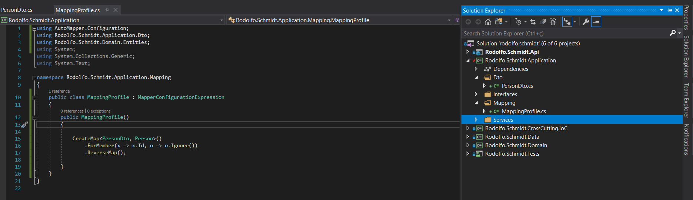
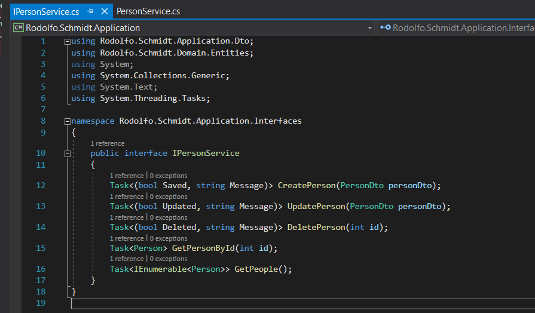
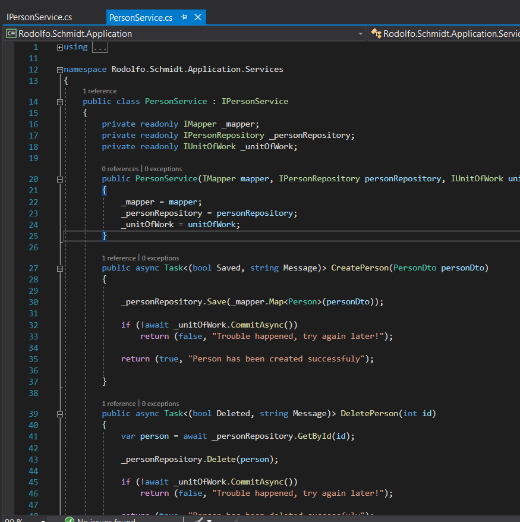
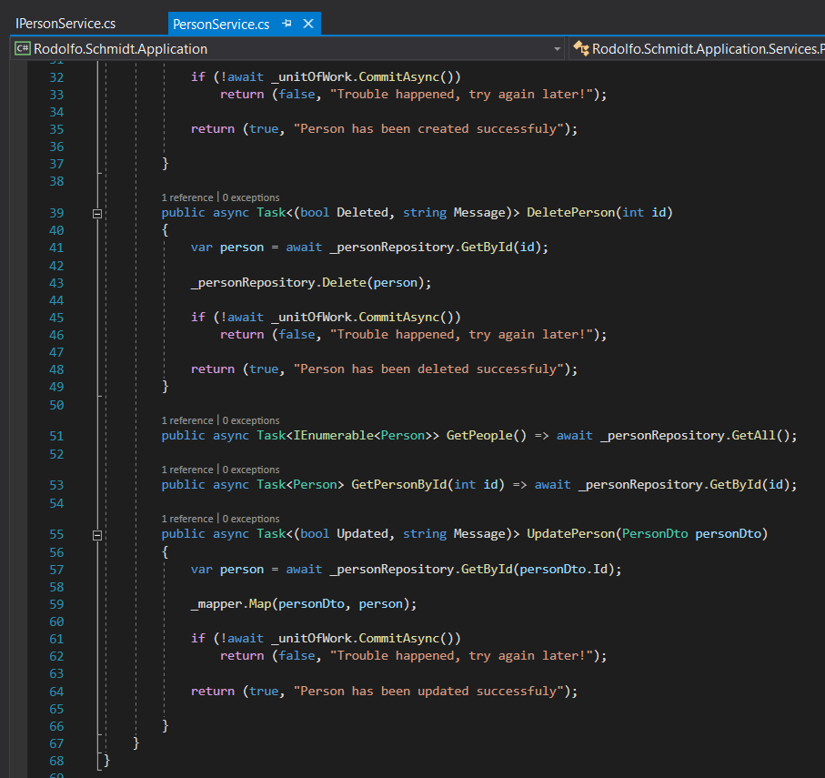

Creating Business Layer
In this session we will create the full business layer of our application.
Creating directories
Our business layer called application is where we will work the system business rule. In it we will create the directories interfaces, services, dto and mapping. Dto (Data Transfer Object) is our "dirty" object in which it is in charge of transporting data from our domain, be it to a third party view, file or api. In mapping we will create our lib Mapping configuration file that will assist us in making this transfer of data from our Domain to our Dto and finally in services we will implement the business rule itself.

Creating the Files
Using what we have learned in previous sessions we will install lib AutoMapper.

After lib is installed we will create our Dto class and our auto mapper configuration file
using System;
using System.Collections.Generic;
using System.ComponentModel.DataAnnotations;
using System.Text;
namespace Rodolfo.Schmidt.Application.Dto
{
public class PersonDto
{
public int Id { get; set; }
[Required]
public string Name { get; set; }
[Required]
public int Age { get; set; }
}
}

using AutoMapper.Configuration;
using Rodolfo.Schmidt.Application.Dto;
using Rodolfo.Schmidt.Domain.Entities;
using System;
using System.Collections.Generic;
using System.Text;
namespace Rodolfo.Schmidt.Application.Mapping
{
public class MappingProfile : MapperConfigurationExpression
{
public MappingProfile()
{
CreateMap<PersonDto, Person>()
.ForMember(x => x.Id, o => o.Ignore())
.ReverseMap();
}
}
}

Now let's implement our interface to finally implement the rules in our service.
using Rodolfo.Schmidt.Application.Dto;
using Rodolfo.Schmidt.Domain.Entities;
using System;
using System.Collections.Generic;
using System.Text;
using System.Threading.Tasks;
namespace Rodolfo.Schmidt.Application.Interfaces
{
public interface IPersonService
{
Task<(bool Saved, string Message)> CreatePerson(PersonDto personDto);
Task<(bool Updated, string Message)> UpdatePerson(PersonDto personDto);
Task<(bool Deleted, string Message)> DeletePerson(int id);
Task<Person> GetPersonById(int id);
Task<IEnumerable<Person>> GetPeople();
}
}

Now to finish the business layer! In it we will inject our repository and auto mapper and using C #'s Tuppla feature we will send 2 variables in return when needed.
using AutoMapper;
using Rodolfo.Schmidt.Application.Dto;
using Rodolfo.Schmidt.Application.Interfaces;
using Rodolfo.Schmidt.Domain.Entities;
using Rodolfo.Schmidt.Domain.Interfaces.Repositories;
using Rodolfo.Schmidt.Domain.Interfaces.UoW;
using System;
using System.Collections.Generic;
using System.Text;
using System.Threading.Tasks;
namespace Rodolfo.Schmidt.Application.Services
{
public class PersonService : IPersonService
{
private readonly IMapper _mapper;
private readonly IPersonRepository _personRepository;
private readonly IUnitOfWork _unitOfWork;
public PersonService(IMapper mapper, IPersonRepository personRepository, IUnitOfWork unitOfWork)
{
_mapper = mapper;
_personRepository = personRepository;
_unitOfWork = unitOfWork;
}
public async Task<(bool Saved, string Message)> CreatePerson(PersonDto personDto)
{
_personRepository.Save(_mapper.Map<Person>(personDto));
if (!await _unitOfWork.CommitAsync())
return (false, "Trouble happened, try again later!");
return (true, "Person has been created successfuly");
}
public async Task<(bool Deleted, string Message)> DeletePerson(int id)
{
var person = await _personRepository.GetById(id);
_personRepository.Delete(person);
if (!await _unitOfWork.CommitAsync())
return (false, "Trouble happened, try again later!");
return (true, "Person has been deleted successfuly");
}
public async Task<IEnumerable<Person>> GetPeople() => await _personRepository.GetAll();
public async Task<Person> GetPersonById(int id) => await _personRepository.GetById(id);
public async Task<(bool Updated, string Message)> UpdatePerson(PersonDto personDto)
{
var person = await _personRepository.GetById(personDto.Id);
_mapper.Map(personDto, person);
if (!await _unitOfWork.CommitAsync())
return (false, "Trouble happened, try again later!");
return (true, "Person has been updated successfuly");
}
}
}

